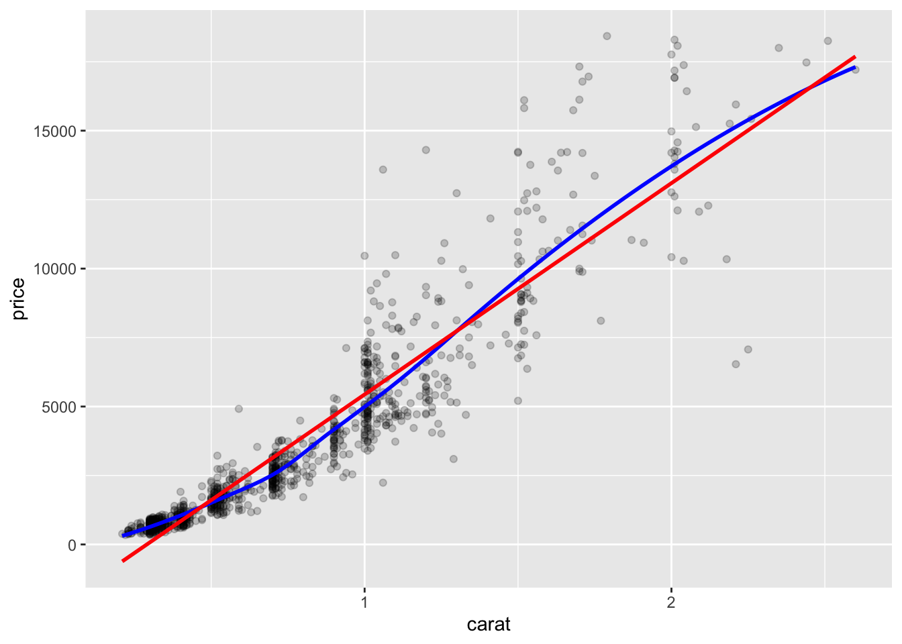

9 Functions
🧩 Learning Goals
By the end of this lesson, you should be able to:
- Recognize when it would be useful to write a function
- Identify the core components of a function definition and explain their role (the
function()directive, arguments, argument defaults, function body, return value) - Identify the scoping of a function in accessing objects in R
- Describe the difference between argument matching by position and by name
- Write
if-else,if-else if-elsestatements to conditionally execute code - Write your own function to carry out a repeated task
- Provide feedback on functions written by others
Functions
Why Functions?
Getting really good at writing useful and reusable functions is one of the best ways to increase your expertise in data science. It requires a lot of practice.
If you’ve copied and pasted code 3 or more times, it’s time to write a function. Avoid repeating ourselves results in many benefits such as:
- Reducing errors: Copy-and-paste then modify is prone to errors, eg, forgetting to change a variable name.
- Efficiency: If you need to update code, you only need to do it in one place. This allows reuse of code within and across projects.
- Readability: Encapsulating code within a function with a descriptive name makes code more readable.
Core Parts
When you define a function, what does it look like?
# Defining a function
function_name <- function(input_name_1, input_name_2 = default_value_2){
# function body - code that does something
return(output)
}
# Calling a function in all valid ways
function_name(input_name_1 = 2, input_name_2 = 4)
function_name(2, 4)
function_name(input_name_2 = 4, input_name_1 = 2)
function_name(2)The core parts of defining a function include:
-
function()directive- This is what tells R to create a function.
-
Arguments/Inputs: the
input_name_1andinput_name_2– these are names of the function inputs-
default_value_2is a default value that is used if no input values are provided when the function is called
-
-
Function body
- The code inside the curly braces
{}is where all the work happens. This code uses the function arguments to perform computations.
- The code inside the curly braces
-
Return value
- We can explicitly return an object by putting it inside
return().
- We can explicitly return an object by putting it inside
Properties
Here are three examples that can help us learn a few properties of functions:
Note:
- In
average2, theremove_nasargument has a default value ofTRUE.
When a function has default values for arguments, they don’t have to be provided when you call the function if you want to use the default value. See below:
Error in `average()`:
! argument "remove_nas" is missing, with no default[1] 1.5[1] 1.5[1] NA- If we don’t provide a
return(), the last value that gets evaluated in the function body and isn’t stored as an object is what the function returns. (This is generally the last line without an assignment operator<-.)-
average3()is one example, but this can easily lead to errors. - We should explicitly return an object by putting it inside
return().
-
Scope
In programming, scope refers to the area of a program where a named object is recognized and can be used. R uses lexical scoping which means that the scope of a variable is determined by where it is created in the code.
Lexical scoping in R works as follows:
- When code refers to an object, eg, data set, function, and vector, R looks for the object in the current local environment.
- If it doesn’t find it, it continues to search by looking in the parent environment, and so on. The top-level environment is the global environment, ie, the location where all interactive computation and storage (outside of a function) takes place. If you save an object in R outside a function local environment, it is stored in the global environment.
- If R can’t find it in the global environment, it will look for it in loaded packages.
When writing and using functions, the local environment is within the function itself. If you define an object in the function, it won’t be accessible outside that function unless you pass it as the output as shown in the example below:
Code
Error:
! object 'fun_new_thing_within_function' not foundScoping is important to consider if you try to refer to objects that aren’t passed as arguments. This can be dangerous because if you re-use names of variables, it is easy to accidentally refer to a variable that is not the one you intended as shown in example below:
Code
[1] 3 4 5
[1] 6 7 8
Anything created/saved/updated within a function that you want accessible outside that function needs to be passed to return() as shown in example below:
Code
[1] 2
[1] 1 2 3
For more about lexical scoping in R, see R Programming for Data Science
Write Functions
Tips for writing functions:
- Write the code for the body of the function (the task that you are wanting to repeat)
- Identify the parts of the function that could/would change (these are the inputs)
- Update the body of the function to be in terms of the inputs
- Avoid manually typing anything that is specific to one input; use code to get that (such as unique values of a variable)
- Identify the output you want to return
✏️ Rescale
Write a function that rescales a numeric vector to be between 0 and 1. Below are some test cases with the expected output; use them to test your function.
-
x = 2:4. Expected output:0.0 0.5 1.0 -
x = c(-1, 0, 5). Expected output:0.0000000 0.1666667 1.0000000 -
x = -3:-1. Expected output:0.0 0.5 1.0
✏️ Format Phone Numbers
Write a function that formats a 10-digit phone number nicely as (###) ###-####. Your function should work on the following test cases: c("651-330-8661", "6516966000", "800 867 5309"). It may help to refer to the stringr cheatsheet.
Call Functions
When you supply arguments to a function, they can be matched by position and/or by name.
When you call a function without argument = value inside the parentheses, you are using positional matching as in the example below:
The above code works because the first argument of ggplot is data and the second is mapping. (Pull up the documentation on ggplot with ?ggplot in the Console.) However, the following code doesn’t work:
Error in `ggplot()`:
! `mapping` must be created by `aes()`.
✖ You've supplied a tibble.However, if we name the arguments, we would be using the name matching approach and the code would work as shown below:

Somewhat confusingly, we can name some arguments and not others. Below, mapping is named, but data isn’t. This works because when an argument is matched by name, it is “removed” from the argument list, and the remaining unnamed arguments are matched in the order that they are listed in the function definition. Just because this is possible doesn’t mean it’s a good idea–please, don’t do this!

In general, it is safest to match arguments by name and position for your peace of mind. For functions that you are very familiar with (and know the argument order), it’s ok to just use positional matching.
✏️ Diagnose Error
Diagnose the error message in the example below:
ggplot() |>
geom_sf(census_data, aes(fill = population))
Error in `layer_sf()`:
! `mapping` must be created by `aes()`geom_sf() treats its first unnamed argument as mapping, so it incorrectly tries to use census_data as an aesthetic mapping. Name the data argument:
The if-else if-else Control Structure
Often in functions, you will want to execute code chunks conditionally. In a programming language, control structures are parts of the language that allow you to control what code is executed. By far the most common is the if-else if-else structure.
if (logical_condition) {
# some code
} else if (other_logical_condition) {
# some code
} else {
# some code
}
middle <- function(x) {
mean_x <- mean(x, na.rm = TRUE)
median_x <- median(x, na.rm = TRUE)
seems_skewed <- (mean_x > 1.5*median_x) | (mean_x < (1/1.5)*median_x)
if (seems_skewed) {
median_x
} else {
mean_x
}
}The if () else {} code is not vectorized; the logical condition in if() cannot be a logical vector of length longer than 1. If you want a vectorized version of conditional execution of code use if_else() or case_when(); these can be used in mutate().
✏️ Convert Temp
Write a function for converting temperatures that takes as input a numeric value and a unit (either “C” for Celsius or “F” for Fahrenheit). The function should convert the temperature from one unit to the other based on the following formulas:
- To convert Celsius to Fahrenheit:
(Celsius * 9/5) + 32 - To convert Fahrenheit to Celsius:
(Fahrenheit - 32) * 5/9
✏️ Extract Domain Names
Write a function that extracts the domain name of a supplied email address. The function should return the domain name (e.g., “gmail.com”). If the input is not a valid email address, return “Invalid Email”. (A valid email ends in “dot something”.)
Code
[1] "macalester.edu"[1] "Invalid Email"Write Functions with tidyverse Verbs
Perhaps we are using group_by() and summarize() a lot to compute group means. We might write this function:
Let’s use it on the diamonds dataset to compute the mean size (carat) by diamond cut:
Error in `group_by()`:
! Must group by variables found in `.data`.
✖ Column `group_var` is not found.What is the problem? Is it that the variable names need to be in quotes?
Error in `group_by()`:
! Must group by variables found in `.data`.
✖ Column `group_var` is not found.Tidy Evaluation
What’s going on? The tidyverse uses something called tidy evaluation: this allows you to refer to a variable by typing it directly (e.g., no need to put it in quotes).
-
group_by(group_var)is expecting a variable that is actually calledgroup_var, andmean(mean_var)is expecting a variable that is actually calledmean_var.
To fix this we need to embrace the variables inside the function with {{ var }}:
The {{ var }} tells R to look at what the variable specified by the input var rather than look for a variable called var.
Pick
Let’s group by both cut and color:
Error in `group_by()`:
ℹ In argument: `c(cut, color)`.
Caused by error:
! `c(cut, color)` must be size 53940 or 1, not 107880.Oh No! What Now?! When c(cut, color) is put inside {{ c(cut, color) }} within the function, R is actually running the code inside {{ }}.
- This combines the columns for those 2 variables into one long vector. What we really meant by
c(cut, color)is “group by both cut and color”.
To fix this, we need the pick() function to get R to see {{ group_var }} as a vector of separate variables (like the way select() works).
✏️ Count with Proportions
Create a new version of dplyr::count() that also shows proportions instead of just sample sizes. The function should be able to handle counting by multiple variables. Test your function with two different sets of arguments using the diamonds dataset.
Code
# A tibble: 5 × 3
cut n proportion
<ord> <int> <dbl>
1 Fair 1610 0.0298
2 Good 4906 0.0910
3 Very Good 12082 0.224
4 Premium 13791 0.256
5 Ideal 21551 0.400 # A tibble: 35 × 4
cut color n proportion
<ord> <ord> <int> <dbl>
1 Fair D 163 0.00302
2 Fair E 224 0.00415
3 Fair F 312 0.00578
4 Fair G 314 0.00582
5 Fair H 303 0.00562
6 Fair I 175 0.00324
7 Fair J 119 0.00221
8 Good D 662 0.0123
9 Good E 933 0.0173
10 Good F 909 0.0169
# ℹ 25 more rows✏️ Plot with Smoothers
Create a function that creates a scatterplot from a user-supplied dataset with user-supplied x and y variables. The plot should also show a curvy smoothing line in blue, and a linear smoothing line in red. Test your function using the diamonds dataset.
Code
# write your answer below
plot_smoothers <- function(data, x_var, y_var) {
ggplot(data, aes(x = {{ x_var }}, y = {{ y_var }})) +
geom_point(alpha = 0.2) +
geom_smooth(method = "loess", color = "blue", se = FALSE) +
geom_smooth(method = "lm", color = "red", se = FALSE)
}
plot_smoothers(slice_sample(diamonds, n = 1000), carat, price)
Done!
- Check the ICA Instructions for how to (a) push your code to GitHub and (b) update your portfolio website